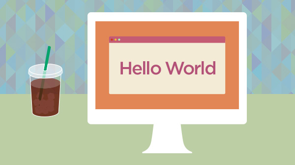

AI Engineer Core Track
LLM engineering, retrieval-augmented generation, QLoRA, and agents.
The sequence tells the story: cloud architecture and enterprise platforms first, then Azure data and AI foundations, followed by deeper LLM and agent engineering.
LLM engineering, retrieval-augmented generation, QLoRA, and agents.
Agent architecture and Model Context Protocol workflows.
Microsoft certification covering core AI workloads and Azure AI services.
Foundations in relational, non-relational, analytics, and modern data workloads.
Cloud concepts, Azure architecture, governance, management, and services.
Community collaboration attendee at the Hyderabad Open Source Conference.
Application development concepts and architecture on the Pegasystems platform.
Oracle Cloud architecture across compute, networking, storage, identity, and databases.
Core Oracle Cloud services, concepts, security, pricing, and support.

Credentials are useful when they change the questions you can ask—and the systems you can responsibly build.